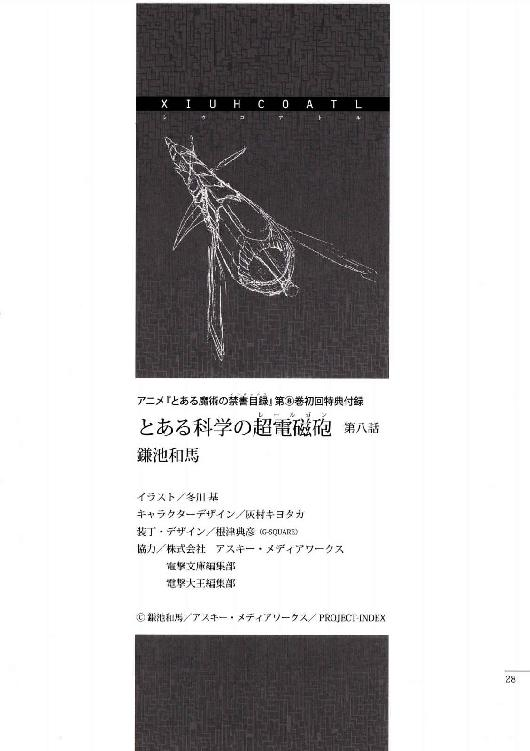
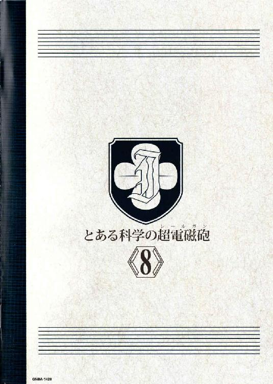

| [鎌池和馬] とある科学の超電磁砲8 | |
| 鎌池和馬 | |
| (2015) | |
|
アニメ『とある魔術の禁書目録』
第⑧巻初回特典付録
|
とある科学の超電磁砲

第八話
四機目、最後の『太陽の蛇』は学芸都市へ突入した。
衛星軌道上からの攻撃範囲は、およそ直径一〇キロ前後。巨大な人工島である学芸都市全域を吹き飛ばすためには、学芸都市のちょうど中心点でアンテナを展開させなくてはならないのだ。
海上で『雲海の蛇』を操るショチトルは、宙を飛ぶ『太陽の蛇』を見送り、それからゆっくりと学芸都市から遠ざかろうとした。このまま巻き込まれるつもりはない。
（......これで、目的は達せられたか）
ショチトルは思う。
『翼ある者の帰還』の技術情報を勝手に調査、研究し、多くの悲劇を生み出してきた施設。その末路に、ショチトルは特に深い感慨を持たない。彼女が考えているのは、『組織』としての成功とは、もっと別の所にあるものだった。
結局、ここにいた観光客達はどうなるのだろうか。
ショチトルは少しだけ考えたが、やがて首を横に振った。
（......全ては話せなかった。だが、必要なヒントは与えたはずだ）
これ以上やれる事はない。
彼女は一度だけ息を吐くと、今度こそ『雲海の蛇』の機首を大きく動かし、最終兵器の攻撃範囲から離れようとする。
その時だった。
ギィイイイイイ!! という凄まじい音が炸裂した。ショチトルがそちらへ目をやると、輝く六枚の翼を携えた少女が、『太陽の蛇』を追うように海から学芸都市へ突入する所だった。
少女は一度手近なビルの屋上へ着地すると、両手で抱えていたもう一人の少女を下ろしたようだった。それから改めて、六枚の翼を広げて『太陽の蛇』へ突き進む。
「あいつ......ッ!!」
一度は海上で足止めしたはずの少女だった。
どういう法則の力を操っているのか、生身で三機もの『太陽の蛇』を撃墜した怪物。ショチトルは歯噛みし、迷い、それから学芸都市内部へ突入していく。最悪、味方の爆撃に巻き込まれる懸念があるが、ここまできて最後の『太陽の蛇』まで撃ち落とされる訳にはいかない。
六枚の翼を広げた少女も、学芸都市内を走る運河を伝って高速接近してくるショチトルに気づいたらしい。少女は『太陽の蛇』を追いながらも、横目でチラリとショチトルを見る。彼女は新たな敵を見て笑っている。
少女は何かを言ったが、ショチトルには聞き取れなかった。
ただし、少女の手にある物を確認する事はできた。
右手の親指に乗せられたもの。
それは、ゲームセンターのコイン。
もう警備も何もなかった。
混乱を続ける学芸都市は、機密区画の出入り口にも大したセキュリティは張り巡らされていない。初春飾利と佐天涙子の二人はロックのかかっていない扉を堂々と開け放ち、立入禁止エリアから再び太陽の光が降り注ぐ海上の街へと飛び出してきた。
彼女達に先導されるように、ゾロゾロとついてくる人々がいる。
学芸都市の機密区画に閉じ込められていた人達だ。二、三〇人程度からなる人々は男も女も大人も子供も混じっていて、統一感は全くない。彼らも彼らなりに急いでいるようだが、体が疲れ切っているのか、全力疾走はできないようだ。佐天の話によると、学芸都市で何らかのトラブルを起こした『犯人』であるらしいのだが......。
初春は青い空を見上げながら、
「今なら、まだ大丈夫かな......。とにかく大型救命艇のドックヘ向かいましょう。『係員』の人達もいるでしょうけど、どのみちあそこ以外に逃げ場はありません!!」
浜辺から見える水平線の方では、今も複数の戦闘機とトビウオが激闘を繰り広げている。あれがいつこっちに迫ってくるか分からないし、流れ弾のミサイルなどが不意に飛んでくる可能性も否定はできない。
とにかく急がなくては。
彼らは『汚染注意』というラベルをベタベタ貼られた区画にいたのだが、実際には特に大した異常は見られなかった。どうやら学芸都市の人々は『自分達でも良く分からない事』を調べていたせいで、『具体的にどんなトラブルに見舞われるかも予測できなかった』ため、考えられる限り最悪の事態を想定して対処していたらしい。佐天はオリーブから、『汚染』は『経営陣』の誤判断だった、といったような話も聞いている。
（ドックの方はやられていないよね。ううん、今は大型救命艇の所まで急がないと!!あれだけ大きな船なら、これぐらいの追加がいても問題ないはず!!）
と、その時だった。
二、三〇人の集団を身振り手振りで誘導していた佐天が、不意にピタリと動きを止めた。初春がそちらを見ると、街の中でも戦闘が起こっていた。
風景はメチャクチャだ。ビルは崩れ、傾き、ひしゃげたジェットコースターのレールが大きく道を塞いでいる。大きな円形の観覧車は巨人の手で押されたように、そのまま倒れて複数の建物を潰していた。
そんな中で戦い続ける者がいる。
片方は、御坂美琴だろうか。どういう理屈なのか、六枚の輝く翼を使って大空を舞っている。そしてもう片方は、今まで見てきたトビウオ。彼女達は宙を浮かぶ全長一〇〇メートルぐらいの巨大な飛行体を潰すか守るかで戦っているらしい。
そのトビウオを見て、佐天はポツリと呟いた。
「ショチトル......？」
「え？」
「駄目だよ、その人と戦わないで!! ショチトル!!」
気がついた時には、もう佐天は走り出していた。
小型のミサイルと超電磁砲の飛び交う戦場へと、ただの水着を着ただけの少女が駆け出してしまう。流れ弾が無人の建物を大きく崩し、道路を丸ごと吹き飛ばすような激戦地のど真ん中へと突っ込んでしまう。
「佐天さん!!」
初春は叫んだが、佐天は一度だけ振り返っただけだった。
行かないと、と佐天の唇が動いた気がした。しかし初春がその言葉を聞き取る事はなかった。佐天は再び美琴とトビウオが戦う最前線へと向かっていく。
美琴とショチトルの戦いは続く。
しかしこの状況では、美琴の方が断然有利だった。何しろ、本来『雲海の蛇』は海上移動用の兵器だ。ホバーの出力を一時的に増強する事で大空へ飛び上がる事もできるが、基本的にそれはオプション的な機能だ。大空を自由に飛ぶ敵から、同じく大空を進む護衛対象を守り続けるのには向いていない。
（いや......）
運河から飛び、並行して走る別の運河へ着地しながら、ショチトルは自分の考えを素直に否定した。
（そんな小手先の事情じゃない。こいつ、地力が強すぎる......ッ!!）
いかに特殊な力を使って大空を飛んでいるとはいえ、敵は生身の人間であるはずだ。
にも拘らず、『雲海の蛇』という兵器に乗り込んでいるショチトルと互角以上の戦いを繰り広げる。前髪からは雷のようなものが飛んでくるし、砂浜の砂鉄を使って巨大な剣のようなものを振り回すし、挙げ句にはちっぽけなコインを音速の三倍もの速度で放ってくる。
とにかく攻撃の種類が豊富で、しかも一発一発がやけに強力なのだ。攻撃方向も一方向だけではない。敵の少女の正面から逃れれば助かるという訳でもない。何度か背後に回り込む機会はあったのだが、そのたびに砂鉄の剣が鞭のようにしなり、ショチトルに決定的な攻撃を許さない。
ショチトルは運河から運河へ飛び移りつつ、ホバー機能をフルに使って何十メートルもの高度ヘ一気に飛び上がる。
そして複数のミサイルを同時に放つ。
美琴は回避行動を取らなかった。
ミサイルの描く弧よりも遙かに鋭角的、直線的に、彼女は一気にショチトルの元へと突っ込んでくる。その背にある噴射の翼が、ギリギリの所ですれ違ったミサイルを少女の背後で爆発させていく。
真正面に迫る少女の前髪から、青白い火花が散る。
雷のような一撃が来る前兆。
ショチトルはとっさに新たなミサイルを放とうとするが、相手の方が明らかに早い。
しかし、
ガコォン!! という鈍い音が聞こえた。
まだ学芸都市の中心点に辿り着いていないにも拘らず、最後の『太陽の蛇』の傘が勢い良く開こうとしていた。アステカ天文学の粋を集めて作られた超大型パラボラアンテナ。どうやら遠隔操作している連中は、学芸都市全域を一撃で破壊できなくても、このまま撃ち落とされるよりはマシだと判断したらしい。
『太陽の蛇』を守ろうとしたショチトルともども、学芸都市の大半を吹き飛ばすつもりだ。
（構うものか......ッ!!）
ショチトルは奥歯を噛み締め、目の前の敵に集中しようとする。
だが、向こうは違った。
正面から撃墜するチャンスを得たにも拘らず、少女の注意は完全に『太陽の蛇』の方へ移っていた。直後、ショチトルの乗る『雲海の蛇』が美琴の元へ突っ込む。少女は翼を動かし、横へ回避しようとしたが、『雲海の蛇』の羽の先へわずかに体を掠め、錐揉み状に吹き飛ばされていく。向こうも何かが起きたのか、六枚の翼の内の半数近くが消失し、速度を落としながら落下していく。
（これで......）
ショチトルは、もはや完全に開いたパラボラを尻目に、わずかに思う。
今から全速力で脱出しようとした所で、もう遅い。
（これで、終わりか）
機体の操作すら放棄し、ショチトルは両目を閉じた。
衛星軌道上から迫り来る一撃を想像するショチトルだったが、
「ふざけんじゃ、ないわよ!!」
その時、
確かに、ショチトルは少女の声を聞いた。
驚いて目を開くと、吹き飛ばされたはずの少女が、自分の体勢すらまともに制御できない状態のまま、それでも右手を『太陽の蛇』へと突きつけていた。ほとんど落下するような格好になっていたが、彼女の狙いだけはピタリと合わせられている。
その親指に乗せられたのは、一枚のコイン。
それを弾くのは、最後まで諦めなかった者の信念。
ショチトルは改めて舵を握り直し、少女の迎撃に入ろうとしたが、間に合わなかった。諦めた者と諦めなかった者。両者の差を大きく引き離すように、少女の手から最後の攻撃が放たれる。
ドゴン!! という爆音が炸裂した。
音速の三倍で射出されたコインは、一瞬でオレンジ色のラインと化した。
その一撃は大きく開いたパラボラアンテナの縁の辺りに直撃した。一点に集中した破壊の力は、そこから一気に全体へ広がっていく。まるで紙を突いたら皺が走るように、円形のパラボラ自体に大きな亀裂が走り、全体の三分の一ほどが大きく吹き飛ばされていく。
直撃した衝撃で、パラボラ自体が大きく向きを変えた。
それでも、木っ端微塵になった訳ではない。
『太陽の蛇』という原型そのものは、未だに大空を漂っている。
（どうなる......？）
ショチトルは急激に方向転換し、美琴を照準に収めようと努力しながらも、意識の大半を『太陽の蛇』の方へ向けていた。
（どうなる......ッ？）
成功し、自分もろとも学芸都市を吹き飛ばして欲しいのか。
失敗し、とりあえずこのまま無事に生き残りたいのか。
どちらを願っているかも分からないまま、ショチトルは成り行きをただ見守る。
そして、
何も起こらないまま、数秒の時間が経過した。
その待ち時間が、逆にショチトルの全身へ強い緊張感を与えてくる。
だが、何もない。
『太陽の蛇』の巨大なパラボラが、破壊の衝撃に流されるまま落下していく。パラシュートのような効果でもあるのか、地表へ向かう速度は意外なほどにゆっくりだ。
だからこそ、ショチトルは気づく事ができたのだろうか。
パラボラの残骸の予想落下地点に。
ショチトルの良く知る、佐天涙子が立ち尽くしていた事に。
「......ッ!!」
その瞬間、ショチトルの腹の底からゾワリとした得体の知れない感覚が昇ってきた。それは緊張のような、怒りのような、様々な感情の混じり合った奇怪な奔流だった。こんな所まで一体何をしに来たのか、一般人の少女は馬鹿みたいに水着のまま突っ立っている。
彼女が見上げているのは、頭上に迫る大量の構造物ではない。
大空を舞っている、ショチトルの『雲海の蛇』だ。
ブチリという音が聞こえた。
それは、ショチトルが自分の唇を噛む音だった。
（あの野郎......ッ!!）
握り潰すほどの勢いで舵を掴み、ショチトルは即座に急降下。『雲海の蛇』に残っているミサイルを確認していく。どう考えても、この機体を使って佐天の体をさらう事は不可能。彼女を助けたければ、降ってくる残骸を吹き飛ばして障害物をどけるしかない。
『太陽の蛇』。
半壊したとはいえ、それは彼女達の力の象徴。
そして、まだ完全に機能を失ったとは断言できないのだが......、
「今は......」
ショチトルの唇が動いた。
わなわなと震える手で、舵についたボタンに触れて、
「今は、単なるガラクタだ......ッ!!」
叫び声と共に、複数のミサイルが一気に飛んだ。
弧を描いて射出されるミサイルが、『太陽の蛇』の巨大な残骸へと直撃した。いくつもの爆発が連続する。巨大な木の構造物が砕け、弾け、へし折られ、バラバラに散った。しかし足りない。残骸の一部分が破壊されているだけで、数十メートルクラスの大きな塊はそのまま佐天の頭上へ向かっている。
そこへ、
先ほどの敵が、翼の大半を失った少女が、コインを音速の三倍で射出した。ドゴン!!という凄まじい音と共に、残骸の側面が大きく吹き飛ばされる。機体は真っ二つになるが、まだ塊は木っ端微塵にはならない。しかし、大きな塊の軌道そのものが、わずかに斜めに逸れた。今なら佐天にぶつかるか、ぶつからないか。ギリギリのラインだ。
ぶつかれば終わり。
あるいは、『太陽の蛇』の残骸が地表に激突した際に撒き散らされる、大量の木片に巻き込まれるか。
「!!」
ショチトルは迷わなかった。
さらに『雲海の蛇』の高度を下げる。ほとんど地面に向かって真っ直ぐ突っ込むような格好で急降下し、佐天涙子の目の前で急激に機首を上げた。かろうじて機体の腹でホバーする。
そこへ、『太陽の蛇』の残骸が容赦なく落下した。
大量の砂煙が巻き上げられた。猛獣の歯のような断面を見せる木片が四方八方へと敷き散らされた。しかし、佐天涙子には傷一つなかった。『太陽の蛇』の残骸と佐天涙子の間に割って入るように、『雲海の蛇』が盾になったからだ。
木片の雨は、ほとんど槍だった。
家の柱に使うような木材が、何本も『雲海の蛇』の側面に突き刺さった。
それを見た佐天が悲鳴のような声を上げた。
「しっ、しょち......ショチトル!! うああ、ショチトルッ!!」
取り乱す佐天の前で、『雲海の蛇』は動かなかった。
駆け寄る事もできず、その場にへたり込む佐天。ついにそのまぶたからボロボロと涙が溢れそうになった所で、カヌーを二つ合わせたようなボディが低く震動した。ちょうど上半分が後ろヘスライドするように、ゆっくりと開いていく。
「くそ......」
吐き捨てた彼女には、目立った傷はなかった。
にも拘らず、ショチトルの顔には、深い皺が刻まれていた。
「なんて間抜けなんだ。私は」
「ショチ、トル？」
ふらふらと近づいてきた佐天に、ショチトルは思わずナイフを抜いていた。
黒曜石という鉱物を材料にして作られた奇怪な刃物。それを佐天に突きつけ、それ以上の接近を拒みながら、ショチトルは腹の底から叫ぶ。
「大破したにしても、手を加えれば最低限の機能ぐらいは回復させられたかもしれなかったのに!!『太陽の蛇』をもう一度動かしてみる価値ぐらいはあったのに!!何で私はこんなのを助けてしまったんだ!!」
一見すれば、突き放したような言葉。
しかし佐天は気づく。
今のは日本語だった。ショチトルは自分の仲間と話す時は、どこか別の外国語を使っていたはずなのに。わざわざ使い慣れない日本語を使って叫んだのだ。
その意味は、
「ったく、分かっているくせに」
聞こえた声に、ショチトルはハッとそちらを見た。
いつの間にか地上へ降りていた御坂美琴が、ショチトルの顔を見据えている。翼のいくつかを失い、失速していた事からも分かるように、やはり無傷では済まなかったのだろう。あちこちに傷のある美琴の目を見て、ショチトルはわずかに言い淀む。
「私は......」
「本当は、アンタだってこんなやり方がまともじゃないって事ぐらい、気づいてたんでしょ」
言葉を取り繕おうとするショチトルを封じるように、美琴は口を挟んだ。
「だから佐天さんに大型救命艇の事を話した。ううん、それ以前に、ここの『係員』に殺されそうになっていた所を助けに入った。アンタ達の『組織』の本来の任務とは何ら関係ない事のために、わざわざ体を張って戦った」
「......、」
「学芸都市の連中が腐ってる事ぐらい、私達だって分かってる。アンタ達の仲間だって、相当ひどい事されてきたんでしょ。でも、私達は、それを粛清しようとするアンタ達の『組織』が絶対的に正しいなんて思わない。アンタ達がこれ以上好き勝手に暴れて、学芸都市から外へ出る事もできない普通の人達まで皆殺しにするって言うなら、私はアンタとも戦わなくちゃならない」
バシュッ、という音が聞こえた。
美琴の背に残されていた翼が、全て消えてなくなっていく。
ダメージはゼロではない。
それでも、美琴は後ろへ下がる事を知らない。
「私は、佐天さんを助けてくれたアンタとなら話が通じるって思った。暴力なんてふざけた方法以外でも解決の道はあるってね。......どうする？アンタが助けた佐天さんの前で、これ以上くだらないケンカを続ける気はあるの？」
「ショチトル......」
佐天は、ゆっくりと、褐色の少女の名前を呼んだ。
ショチトルは応じなかった。
俯いたままの少女は、『雲海の蛇』の舵を握り締め、ブルブルと震えたまま、しかし動かない。それが、端的にショチトルの心情を示していた。戦わなくてはならないのに、戦いたくはない。ショチトルは、最後にどこの国のものか分からない言葉で大きく罵倒すると、まるで自分の芯を自分でへし折るように、『雲海の蛇』の舵へ思い切り拳を叩きつけた。
ショチトルは機体上面が開いた『雲海の蛇』の中に体を沈めたまま、ぐったりと脱力していた。大空から降り注ぐ太陽の光に、ゆっくりと目を細める。
すぐ近くで佐天涙子と御坂美琴が何やら話をしていたが、ショチトルは聞いてもいなかった。彼女はただ、ここで起きた事をぼんやりと考えていた。
学芸都市はもうここまでだろう。
連日にわたって行われた襲撃作戦によって、多くの建物は破壊されている。複数の爆発によって地面を掘り返され、決壊した運河から大量の海水が溢れ返っているエリアもある。
根幹となる人工島の基盤こそ粉砕していないが、これだけ騒ぎが大きくなってしまえば、もうこれまで通りの活動は行えないだろう。まだいくつかの機密エリアが機能している可能性もあるが、この混乱の中なら、ショチトルだけでも簡単に侵入して破壊できるだろう。そうすれば、彼らの研究成果も全て灰燼に帰す。
それで良いではないか。
わざわざ大勢の民間人まで巻き込んで、人工島を丸ごと崩壊させる必要などないではないか。
「......、」
そこまで考えて、ショチトルはわずかに息を吐いた。
その時だった。
ジリジリ、というノイズのような小さな音。
『雲海の蛇』に搭載された通信用霊装から、『翼ある者の帰還』の男からメッセージが入る。同僚ではなく、上司に当たる男の声だ。
『聞こえるか、ショチトル。作戦の優先順位変更だ』
「......？」
『連中、街の外周都にいくつか、大型救命艇を隠してやがった。結構なサイズだ。学芸都市で培ったサンプルをまとめて輸送するつもりかもしれねえ』
ショチトルの全身に、ぞわりという悪寒が走った。
これから同僚のやろうとしている事が、手に取るように分かった。
『お前、今、どこにいる？ これから三・五から三・七にかけて、小さな穴が空く。ここを突けば、後は連鎖的に学芸都市東部方面の防衛ラインは壊滅するだろう。俺達はヤツらの戦闘機を振り切ったら、そのまま一気に大型救命艇のドックを叩く。お前も動けるようなら参加しろ』
「待て......」
ショチトルは思わず通信用霊装へ身を乗り出した。佐天と美琴がこちらを見るが、使っている言葉のせいか、彼女達には状況が掴めていないようだ。
「大型救命艇に乗っているのは学芸都市にやってきた観光客と、機密情報に触れていない一般の従業員だ。あの救命艇にサンプルを保管するような設備は搭載されていない!!」
『何故言い切れる？ 実際に確かめたのか？』
「それは......」
『大方、お前の知っている情報はデータの図面だけだろうさ。そんなものが何の当てになる？これだけの馬鹿げた施設を作り上げた連中が、救命艇には何も隠していないと何故言える？そもそも、俺達がリニアモーターカー用の海底トンネルやヘリポートを真っ先に破壊したのは何故だ。......必要な物を、必要なだけ破壊するためだろ』
「だが、あそこには街中から普通の人達がかき集められているんだ！分かっているのか。私達の事なんて何も知らない、『雲海の蛇』を直接見せてもどうやって動いているか想像さえできない、そんな人達で溢れ返っているんだぞ！それを───ッ!!」
『知った事じゃないな』
男の同僚は、簡単に切り捨てた。
『俺達は、そんなつまらないもののために戦っている訳じゃない』
失望を意味しているのだろう、通信は唐突に切れた。
ついてこないなら文句を言うな。
俺達は俺達で勝手にやらせてもらう。
口調一つに、そんな傲慢さが窺えた。会話のできない相手の典型だ。どうにかして食い止めたいのは山々だが、『翼ある者の帰還』の中では、彼らの方が立場は上。そして一応は、正式に与えられた作戦の範疇には収まってしまっている。この状況で無理に止めに入れば、裁かれるのはショチトルの方なのだ。
「くそっ!!」
ショチトルは思わず吐き捨てた。
佐天が心配そうな顔で、何が起きたかを尋ねてくる。
答えるのは気が引けた。
かと言って、黙っていても問題は解決しない。
ショチトルは、わざわざ日本語を使って言葉を発する。
「......私の組織の人間が、もうすぐ包囲網を突破する。連中は海に出ようとしている大型救命艇に学芸都市の研究データが保存されていると判断し、これから沈めるつもりらしい」
「ちょ......」
「嘘でしょ!?」
美琴と佐天の二人が絶句する。
しかも、ショチトルから詳しい話を聞くと、どうやら『雲海の蛇』や大型救命艇サーモンレッドの位置の関係上、真っ先に狙われるのは初春が乗っている船体のようだ。
美琴はショチトルの肩を掴んで大声で尋ねる。
「アンタと同じ組織の人間でしょ！ 何とか止められない訳？」
「同じ組織といっても、階級は向こうが上だ！言葉で止められるならとっくにやってる!!」
よほど苛立っているのか、ショチトルはその手を振り払うと、噛みつくように叫び返した。
「研究データのあるなしなんて、本当の所はどうでも良いんだろう。とにかく殺せればそれで満足なんだ。そんな連中を説き伏せる方法なんて存在しない!!」
佐天は素人なりに、慌てながらも頭を使って、
「どっ、どっ、どうしよう!? そうだ、『係員』の人達に事情を話して、戦闘機をいくつか回してもらうとか───」
「そんな余力があれば、とっくに投入されてる！学芸都市は東部洋上で現状の防衛ラインを守るのに精一杯だ。その上で、ヤツらは『穴が空く』と言ったんだ!!」
「みっ、御坂さん......ッ!?」
すがるような目で佐天は美琴の方を見たが、彼女は彼女で首を横に振った。
「駄目。なんか翼を作るために、空気中に漂っている水分子を使っているんだけど、そっちが限界に達してる。一定の比率で分布しているのが重要だったんだけど、時間の経過と共に水分子が集まって、ただの『水滴』になってきてる。平たく言うと飛べないのよ。黒子もダウンしているから『空間移動』は使えそうにないし」
「そんな......」
「とはいえ、別に私自身の能力が使えなくなっている訳じゃない。向かってくる連中を海岸線で待ち受ける事自体はできるけど......」
「海上を突き進む『雲海の蛇』の瞬間最高速度は、マッハ二に達する。複数同時に突っ込んでくる機体を一つでも見逃せば、後は大型救命艇まで一直線だ」
ショチトルは歯軋りしながら、そんな事を言った。
「当然、お前にも協力してもらう。『太陽の蛇』を撃ち落とすほどの、貴重な戦力だからな。だが、それだけでは足りない。お前が海岸線で迎撃態勢を取った上で、さらに海上で動きを止め、ある程度『雲海の蛇』の数を減らす必要がありそうだ」
「でも、そんなの......」
佐天は言い淀んだ。
「そんな都合の良い戦力なんて、ないよ。だって、戦闘機はないんでしょ。白井さんの『空間移動』も駄目なんでしょ？私や初春達には、そんなにすごい能力なんてないもん。誰が、どうやって海上であいつらと戦───」
そこまで言って、佐天の言葉が完全に止まった。
気づいたからだ。
ショチトルが、半壊した『雲海の蛇』に乗り込んでいる事に。
「そういう事だ」
「待ってよ!!」
あっさりと言ったショチトルに、佐天は思わず叫んでいた。
「だって、こっちも向こうもおんなじトビウオなんでしょ？ショチトルのだけが、特別にすごい機体に乗ってる訳じゃないんでしょ!?だったら、そんなの、数で勝負が決まっちゃうじゃない!!」
いや、むしろショチトルの『雲海の蛇』は、佐天を庇うために家の柱のように太い木片がいくつも突き剌さっていた。こんな状態で、完全武装でやってくる、複数の『雲海の蛇』と戦ったらどうなるか。佐天は最悪の想像を頭に浮かべ、慌ててそれを否定する。
美琴は、ショチトルの目を見て尋ねた。
「私が、アンタの『雲海の蛇』に乗せてもらうって方法もあるんじゃない？」
「断る」
ショチトルは即答した。
「私はお前の傍に寄り添っていたパートナーとは違う。即席でチームを組んだ所で、二人羽織りの戦術がいきなり成功するはずがない。どちらも互いの足を引っ張り合って撃破されるのがオチだ。それなら、一人で戦った方がマシだ」
それは本心ではないだろう。
ショチトルは自分の戦いに美琴を巻き込むつもりはないのだろう。直接言葉で聞かされた訳ではないが、目を見ればそれぐらいはすぐに分かる。
美琴はわずかに息を吐いた。
ここでケンカをしてもどうにもならない。どのみち、『雲海の蛇』を操れるのはショチトルだけだ。力づくで何とかしようとした所で、ショチトルが首を縦に振るとは思えない。
「......本当にヤバくなったら、海岸線から五〇メートルの範囲内まで逃げてきなさい。そこからなら、私の『超電磁砲』で援護できるから」
「御坂さん!! ショチトルも!?」
佐天は慌てて美琴に食ってかかった。このままでは、本当にショチトルが行ってしまう。そういう風に思ったのだろう。
ショチトルは少しだけ黙ると、やがて『雲海の蛇』の舵を睨んだまま、美琴に向かってこう言った。
「頼めるか」
「何を」
「そこの大馬鹿野郎を、お前の電気で気絶させてやってくれ」
「ショチ......ッ!?」
佐天は何かを言い掛けたが、その時、美琴が佐天の肩に軽く手を置いた。
後ろから肩を叩いて振り向かせるような、何気ない仕草。
しかし、直後に、バチン!! という火花の散る音が炸裂した。繊細に調節し、人体に妙な影響を残さないようにした高圧電流。それをまともに喰らった佐天の体が、そのまま真下ヘストンと崩れていく。
美琴とショチトルは、わずかに哀しそうに、佐天の顔を見下ろした。
意識を失った佐天は、おそらく偶然だろうが、まるで何かを掴もうとするように、その手を前へ伸ばしていた。
ショチトルは振り切るように佐天から目を離し、そして言った。
「行くぞ」
「......本当に良いのね？」
「お前も気絶するか」
「......単に戦力の問題じゃない。これから戦う相手は、アンタの仲間達なのよ」
「同じ事を二度言わせる気か」
短く、そして覚悟の決まった声に、美琴はため息をつく。
こっちこそ、こいつを気絶させてやろうかとも思ったが、それは叶わなかった。ショチトルは『雲海の蛇』の上部カバーを操作すると、ボロボロになった機体を完全に密閉させて、すぐ近くにあった運河の水面へ浮かぶ。
『先に行っている。全てを迎撃できる保証はない。お前の事を信用する義理はないが、私達の最終兵器を撃ち落とした腕だけは認めてやる』
美琴が文句を言う暇もなかった。
バォ!! という轟音が炸裂すると、『雲海の蛇』はものすごい速度で運河を走り抜けた。あっという間に視界から消えて行ったショチトルの機体は、運河を抜けて海へと飛び出していく。
「......、」
美琴は一度だけ、倒れたままの佐天を振り返った。
しかし、こちらもじっとしている訳にはいかない。
彼女自身も防衛ラインを築くため、そして最後の最後でショチトルを守る屋根を作るために、美琴も海岸線へ走っていく。
ショチトルはボロボロになった『雲海の蛇』を操りながら、海岸線から急速に離れ、東の海を突き進む。もうすぐ、元の仲間だった『翼ある者の帰還』とぶつかる事が分かっていても、ショチトルの心は暴れ出したりはしなかった。
『翼ある者の帰還』を敵と認めた訳ではない。
これまでも、これからも、ショチトルは『翼ある者の帰還』に骨を埋める決意は変わらない。
しかし、だからこそ、ショチトルはここで抗う。
骨を埋める決意があるからこそ、こんな所ぐらいではわがままをさせてもらう。
結果、組織の法に従って制裁を受けるのならば、それは構わない。
組織の法すらなく、ただ怒りに任せて理不尽な暴力を振るわれるようなら、その時こそ初めて『翼ある者の帰還』に失望するべきだ。
（たかが個人が組織を見定めるとは。私も、随分と尊大になったものだ......）
ショチトルがわずかに笑みを作った時、ふと、一機の『雲海の蛇』が近づいてくるのをショチトルは悟った。舵を握るショチトルに緊張が走るが、そこで気づいた。あれは敵ではない。同僚の少女、トチトリだ。
「何しに来た？」
『鼻持ちならない上司に命令されて、敵の防衛ラインの穴を一足先に潜り抜けてきた所。とはいえ、面白くないと思っているのは私も同じだ』
トチトリの『雲海の蛇』は一度ショチトルの機体の横を通り過ぎると、すぐさまＵターンして、ショチトルと方向を合わせる。さらに、そのままショチトルの隣を並走し始めた。
「行き先を間違えていないか」
『いいや。私の道はこっちだよ』
トチトリは通信用霊装越しに、含んだ笑みの吐息を洩らす。
そう言ったからには、彼女も彼女で覚悟を決めてきたのだろう。
『腐れ縁だからな。こんな時ぐらいは付き合ってやる』
「まったく。大馬鹿野郎というのは、どこにでもいるものだ」
バォォ!! という二つの爆音が海を引き裂いた。
水平線の向こうから、クソ野郎どもの乗る『雲海の蛇』がチラホラと見える。
突然の行動に驚くヤツらの前で、ショチトルはミサイルの安全装置を解除した。
『......なるほどな。それなら遠慮は必要ねえよなぁ!!』
「もちろんだ。私も本気で行くのだからな!!」
最後の戦いが、始まった。
複数の『雲海の蛇』が交差し、爆発音が連続する。
短い気絶から目を覚ました佐天は海を見ている事しかできなかったが、海岸線で待ち構えていた御坂美琴は、たった一度も『雲海の蛇』とは戦わなかった。全てを迎撃できる保証はないと口では言っておきながら、ショチトルは本当に一機も『雲海の蛇』の侵入を許さなかったのだ。
戦いを終えたショチトルは、一緒に戦っていた仲間の『雲海の蛇』と共に、そのまま水平線の向こうへと去ってしまった。
学芸都市の経営は破綻した。
表向きは、安価な旧式戦闘機を軸に戦う特殊なゲリラが学芸都市を襲ったものとして処理されたようだ。ゲリラの本部はすでに特殊部隊が強襲したという事で大衆は納得していたようだが、おそらくそれらは嘘だろう、と佐天は考えている。強襲した、というのが嘘なのではなく、ゲリラの本部が存在する所から嘘なのだろう、と。
当然ながらいくつもの目撃情報と合致しないのだが、そうした意見はＵＦＯ目撃談と同列視されたり、集団妄想の一種と判断されたりしているらしい。
去り際、大型救命艇サーモンレッドの中で、映画監督のビバリーは何やら色々考えていたようだが、最終的には『やはり恋愛映画の方が良いよね』とこぼしていた。どうやらハリウッドの方からは引き揚げて、今後はヨーロッパで活動するらしい。
広域社会見学は予定よりも早く切り上げられ、佐天達は今、帰りの飛行機に乗っている。窓の外に見えるのは、一面が太平洋の青い海。その一点に染みのように見えるのは、日本の学園都市の協力を受けて、本格的に解体作業を開始した学芸都市の人工島だろうか？
美琴の話によると、どうやら解体作業に日本の学園都市が協力したり出資したりしている背景には、学芸都市で行われていた研究成果を完全に破棄するのを見届けたい、という狙いがあるらしい。
しかし、今の佐天にはどうでも良かった。
ショチトル達を無用な戦いに駆り立てていたものが壊れていくのは、本来なら喜ぶべき事柄なのだろう。だが、佐天は戦いそのものになど、興味がないのだ。ショチトルがどこへ行ってしまったか分からないのでは、とても無邪気に喜ぶ事などできない。同じ組織の人間に牙を剥いた彼女は、今どこで何をしているのだろうか。
「ショチトル......」
佐天は窓の外を眺めながら、ポツリと呟いた。
彼女は何故、最後の最後で自分を気絶させるよう、美琴に頼んだのだろうか。素人で戦力にならない自分の言葉など、聞くだけ無駄だと判断したのだろうか。ショチトルにとって、自分の言葉などその程度の価値しかなかったのだろうか。
そんな事を、隣の席にいた美琴に話してしまったのは、おそらくほとんど八つ当たりだろう。実際に佐天を気絶させたのは、彼女だったのだから。
「違うわよ」
しかし、美琴は佐天の言葉に対して、首を横に振った。
「あの子はちゃんと、佐天さんの言葉を聞いてくれていたわよ」
「でも、だって、結局、ショチトルはあたしの言葉なんて聞いてくれなかったじゃないですか。御坂さんに頼んで、強引に会話を打ち切っちゃったじゃないですか」
「そんなの簡単じゃない。ショチトルは、あれ以土佐天さんの言葉を聞いていられなかったのよ。戦いに行くのを、迷ってしまうほどにね。本当はものすごく嬉しかったのよ」
「......、」
その言葉を聞いていた佐天は、しばらく黙っていた。
別に、美琴だってショチトルに意志を確認した訳ではない。単なるその場限りの嘘にすぎないのかもしれない。だが、佐天はそれを真実だと思った。おそらく美琴とショチトルは、佐天とは違う形で繋がりを感じていた。だから佐天の知らない事を知っているし、佐天だけが知っている事を知らない。
「ちなみに、もし気絶しなかったら、あそこで何を言ってあげるつもりだった訳？」
美琴にそんな事を聞かれたので、佐天は素直に答えた。
すると、美琴は何故かゲラゲラと笑い出した。
「ちょ、何なんですか」
「いやいやいやいや！ 悪い悪い。だけどさぁ、佐天さん。やっぱりショチトルは正しかったと思うよ。そんな台詞を聞いちゃったら、ショチトルがあそこで踏み止まっても私は文句を言えなかった」
「......そんなに変な言葉だったですかね」
頬を膨らませながら、佐天は笑い続ける美琴から顔を逸らす。
再び窓の方を見ながら、もう一度、頭の中で呟いた。
先ほど、美琴に答えた台詞を。
いつとも知れぬ時間、どことも取れぬ場所。
二人の少女は、適度な光に満たされた、長い通路をただ歩いていた。体の前に重ねられた両手には、木の板に穴を空けたような手枷がはめられている。
並んで歩く彼女達は小さな声で、二、三、言葉を交わす。どうやら軽い冗談のようで、片方は肩を震わせて笑っているが、もう片方は全く反応がない。
やがて、彼女達は立ち止まった。
特に広い空間に出た訳でもない。目の前に巨大な扉がある訳でもない。傍目から見れば、長い長い直線通路の途中にしか見えない場所。しかしここは彼女達、いや彼女達の所属する組織にとって大きな意味を持つポイントだった。
どこかから、声が響く。
反響しているような、音源のないような、不可思議な声が。
『始めるぞ。構わないか』
尋ねたくせに、少女達の回答を待つ時間は用意されていなかった。
直線通路を作っていた左右の壁そのものが、大きく奥へ移動していく。ただの通路だった場所が、大きな空間へと変わっていく。壁は一律に移動するのではない。奥へ進む距離が段階的に調節されていて、まるで巨大な階段のように展開されていく。
左右に広がる果てしない石の階段。
あるいは、それは大学の講義室にある座席を彷彿とさせる。
やがて、『階段』のはるか上部から、ゾロゾロと人影が現れた。独特の民族衣装をまとった
老若男女。彼らは一人一人が決められた位置まで進むと、ゆっくりと段に腰を下ろしていく。
二人の少女は、改めて背筋を伸ばした。
しかし片方は何かを呟き、もう片方は呆れたように息を吐いた。
『余裕があるな』
そんな声が聞こえたが、二人の少女は応じなかった。
ただ彼女達は、間近にいる腐れ縁同士でこんな言葉を交わしていた。
「さてはて。どんな制裁を喰らう羽目になるのかな。ショチトル」
「トチトリ。くだらないのは分かるが、少しは真面目な顔をしろ」
アニメ『とある魔術の禁書目録』第⑧巻初回特典付録
とある科学の超電磁砲 第八話
鎌地和馬
イラスト／冬川基
キャラクターデザイン／灰村キヨタカ
装丁・デザイン／根津典彦(G-SQUARE)
協力／株式会社 アスキー・メディアワークス
電撃文庫編集部
電撃大王編集部
Ｃ鎌池和馬／アスキー・メディアワークス/PROJECT-INDEX

